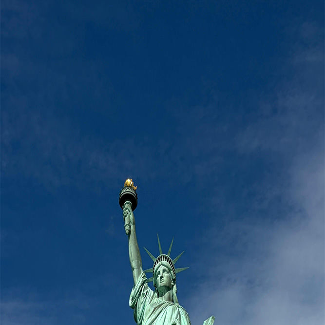

Liberty Island / New York Harbor
Statue of Liberty
An enduring symbol of freedom and friendship between nations.
The Statue of Liberty stands in New York Harbor as an enduring symbol of freedom and friendship between nations.

About
Built
Built in France and dedicated in 1886, the statue was presented as a gift from the people of France to the United States. It was designed by Frédéric Auguste Bartholdi and engineered in part by Gustave Eiffel, then shipped in sections and re-assembled on what is now Liberty Island.
Today
Over time it became a meaningful landmark for both Americans and immigrants entering America through nearby Ellis Island. Today its location is a national park and it is open to a limited number of visitors. While immigrants no longer enter through Ellis Island, it remains a landmark and symbol of the United States.
Directions
For a visit starting in Manhattan, go to Castle Clinton in The Battery for the Statue City Cruises ferry to Liberty Island. The map links lead to the mainland departure area, not to the statue itself.